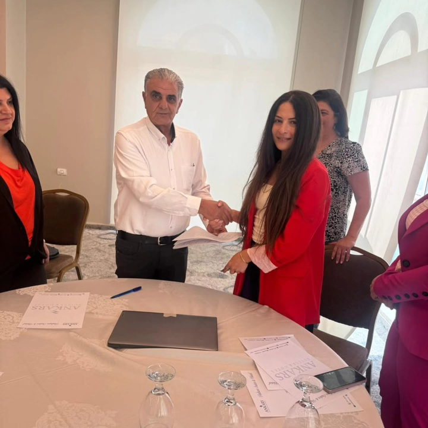

Individual Capacity
Participants strengthen leadership, confidence, advocacy, communication, resilience and practical skills.

Our impact is reflected in the people reached, the capacities strengthened, the partnerships built and the systems created to sustain the work.
Participants strengthen leadership, confidence, advocacy, communication, resilience and practical skills.
Women and youth gain tools to engage, collaborate, initiate activities and contribute to their communities.
Takadom strengthens internal systems, manuals, partnerships and learning frameworks that support long-term delivery.
In the Embodied Resilience and Leadership project, women engaged in grounding, movement, nervous-system regulation and collective reflection. The program linked well-being with leadership and community action.
This reflects Takadom’s broader approach: resilience is not separate from participation—it can be a foundation for it.
See this activity under Save the Youth →